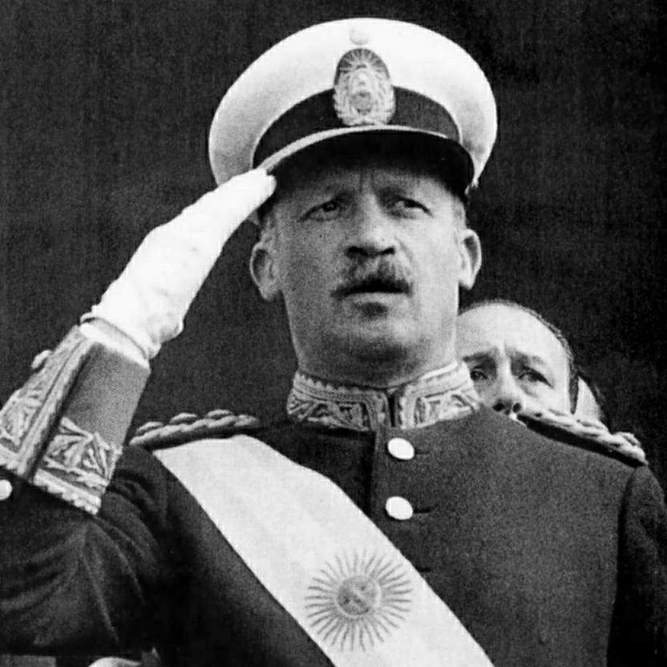
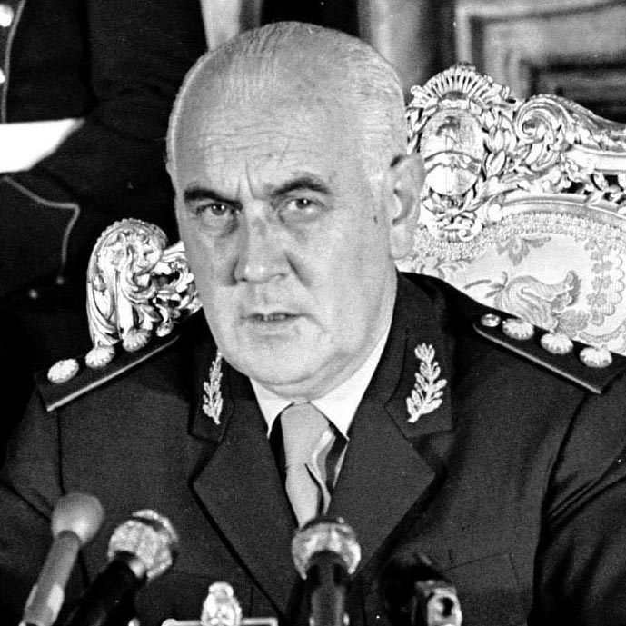
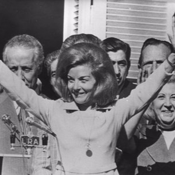
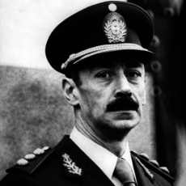
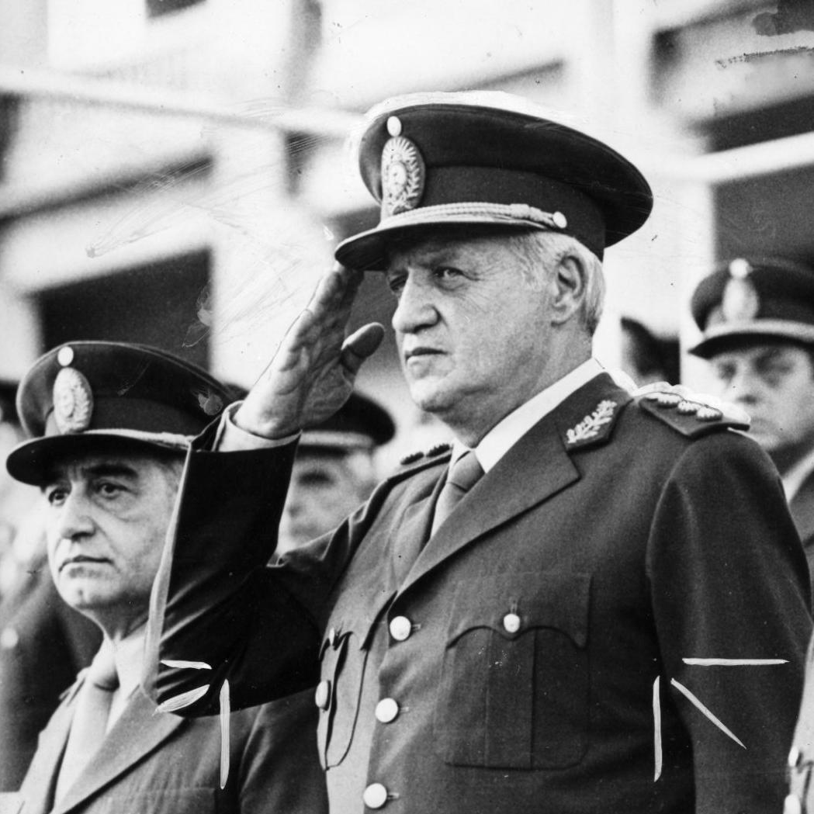

Ditadura na Argentina

Juan Domingo Perón
Juan Domingo Perón foi um militar e político argentino, e presidente da Argentina por três mandatos: de 1946 a 1952, de 1952 a 1955 e de 1973 a 1974. Embora ainda sejam figuras controversas, Juan e Eva Perón não deixam de ser considerados ícones pelos peronistas.

Juan Carlos Onganía
Juan Carlos Onganía Carballo foi militar e presidente de facto da Argentina entre 29 de junho de 1966 e 8 de junho de 1970, quando foi deposto por um novo golpe de estado, comandado pelo general Alejandro Agustín Lanusse.

Alejandro Agustín Lanusse
Alejandro Agustín Lanusse Gelly foi um militar argentino que ocupou de facto a presidência do país entre 22 de março de 1971 e 25 de maio de 1973.

Isabelita Perón
María Estela Martínez de Perón, conhecida como Isabelita Perón, é uma ex-política e dançarina argentina, ela serviu como a 38.ª Presidente da Argentina de 1974 a 1976, sendo a primeira mulher a ocupar o cargo. Ela foi a terceira esposa do presidente Juan Domingo Perón.

Jorge Rafael Videla
Jorge Rafael Videla Redondo foi um general argentino e dictador de seu país entre 1976 e 1981. Chegou ao poder em um golpe de estado que depôs a presidente María Estela Martínez de Perón em 24 de março de 1976, iniciando uma ditadura na Argentina.

Leopoldo Fortunato Galtieri
Leopoldo Fortunato Galtieri Castelli foi um general e presidente argentino. Foi presidente da Argentina de 22 de dezembro de 1981 a 18 de junho de 1982. Galtieri governou seu país como um ditador militar durante o período conhecido como Processo de Reorganização Nacional.